TakeSure — Prototype walkthrough
Hack@BVP 8.0 · Team Bug Hunters · Screen by screen: what the judge sees, what to say, and which technology does the work on that screen (screenshots taken from the running prototype on 18 Oct 2026)
Demo order (about 4 minutes): Home → Safety checker (Type the names) → Review → Result (English, then Hindi) → scroll to sources → Download PDF → Report a reaction → Dashboard → Knowledge base. Keep the API docs tab ready for technical judges. Start the site with START TAKESURE.bat on the Desktop; the address is http://localhost:3000.
1. Home page
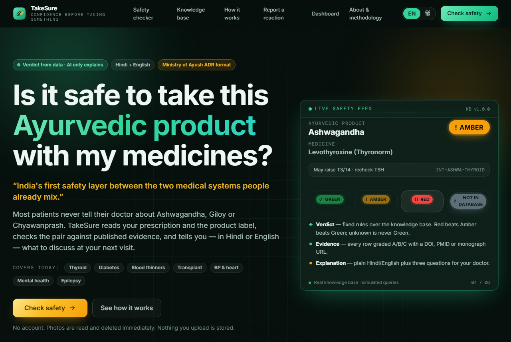
http://localhost:3000 — the promise and the live safety feed
What the judge seesThe question we answer: "Is it safe to take this Ayurvedic product with my medicines?" Three badges: verdict from data and AI only explains; Hindi + English; Ministry of Ayush ADR format. On the right a live feed cycling through real knowledge-base rows (Ashwagandha + Levothyroxine = AMBER) and the four verdict colours. Coverage chips: thyroid, diabetes, blood thinners, transplant, BP and heart, mental health, epilepsy.
What to say"This is TakeSure. A patient on Thyronorm who starts ashwagandha has nobody to ask — the doctor does not know Ayurveda, the chemist has no tool. TakeSure checks the pair against published evidence and answers in Hindi or English. No account, no photo is stored. Let me show you a real check."
Kisme kya use kiyaNext.js 16 + React 19 + TypeScript (pages, routing, server rendering) · Tailwind CSS 4 (dark emerald/saffron theme) · Framer Motion (the animated feed, counters, reveals) · the feed reads real rows from GET /api/demo/scenarios and GET /api/kb/stats on the FastAPI backend. The EN/हिं toggle is our own i18n dictionary stored in the browser's localStorage.
2. Safety checker — upload or type
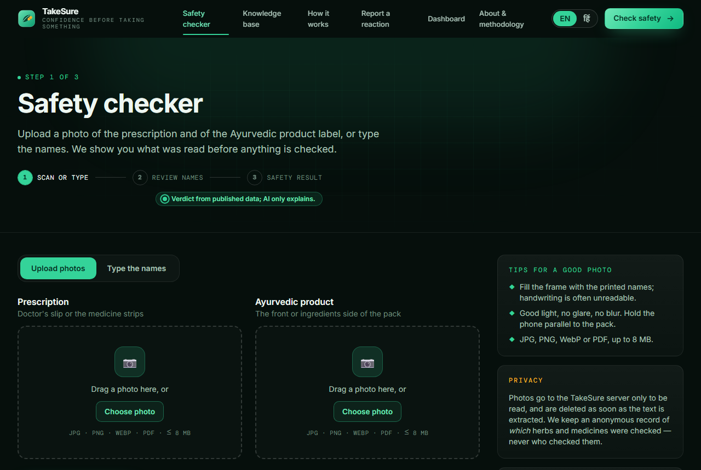
/check — step 1 of 3. Two photo slots: prescription and Ayurvedic product label
What the judge seesTwo drop zones (prescription, Ayurvedic product), accepted formats JPG/PNG/WebP/PDF up to 8 MB, tips for a good photo, and a privacy note: photos go to our server only to be read and are deleted as soon as the text is extracted. A second tab, "Type the names", for when there is no photo.
What to say"Step one: scan or type. A patient photographs the doctor's slip and the product box. Our OCR reads both. Nothing is checked yet — every name is shown back first. For the demo I will type, so you can see the matching clearly."
Kisme kya use kiyaUpload goes to POST /api/check/upload (type/size validation, temporary file) then POST /api/check/extract. On the server: Pillow pre-processing (grayscale → upscale with LANCZOS → autocontrast) → Tesseract 5.4 via pytesseract with languages eng+hin, page mode --psm 6. The image file is deleted right after extraction (safety purge after 15 min). OCR runs on the laptop, no internet. The upload component is our React FileDrop with a useMemo object-URL preview.
3. Type the names — the matching step
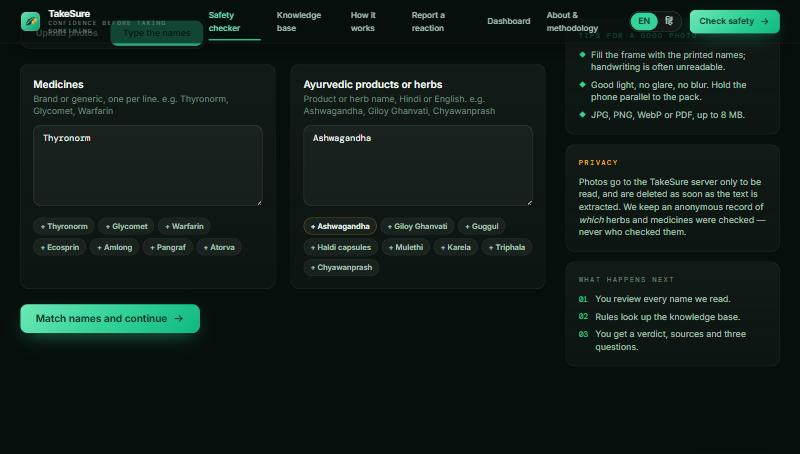
/check — "Type the names" tab with quick-add chips (Thyronorm, Glycomet, Warfarin… / Ashwagandha, Giloy Ghanvati, Guggul…)
What the judge seesTwo boxes: Medicines (brand or generic, one per line) and Ayurvedic products or herbs (Hindi or English). Chips add common names in one click. "What happens next": you review every name, rules look up the knowledge base, you get a verdict with sources and three questions.
What to say"I will type what a real patient would: Thyronorm, which is a brand name, and Ashwagandha. Notice I did not say levothyroxine — most patients only know the brand. TakeSure's bridge dictionary handles that." Click Match names and continue.
Kisme kya use kiyaPOST /api/check/resolve with [{"kind":"drug","text":"Thyronorm"},{"kind":"herb","text":"Ashwagandha"}]. The matcher tries an exact hit first (score 100), then RapidFuzz WRatio against our dictionary of brands (drug_brands), generics, products (products, product_herbs) and herb synonyms in Sanskrit/Hindi/Latin (herb_synonyms). Thresholds: ≥ 85 accepted, 70–85 "please confirm", < 70 unrecognised; a length guard rejects short partial matches. No machine learning here — it is string similarity, which is why it is fast and explainable.
4. Review what we found — the human checkpoint
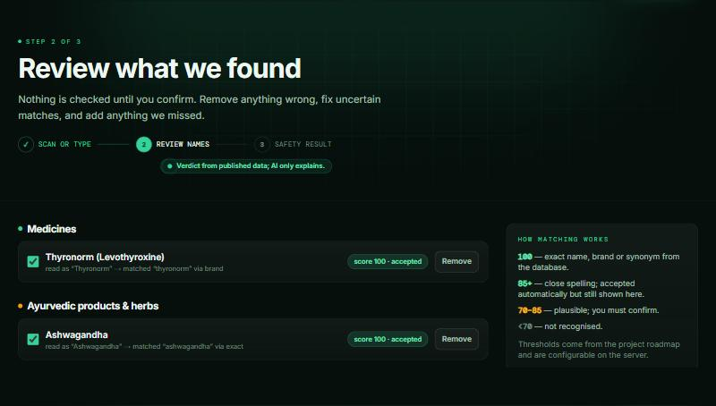
/review — step 2 of 3. Every name with its score and how it was matched
What the judge sees"Thyronorm (Levothyroxine) — read as Thyronorm → matched thyronorm via brand — score 100 · accepted." "Ashwagandha — via exact — score 100." Each has a tick box and Remove. A side panel explains the thresholds. Below: "Add something we missed" and the button Confirm and check safety.
What to say"This screen is the safety checkpoint. Nothing is checked until the patient confirms. The brand Thyronorm became the generic levothyroxine, and the app tells you how it matched. If OCR had misread something, the patient removes it here or adds what we missed." Click Confirm and check safety.
Kisme kya use kiyaPure frontend state (React) showing the resolve response: canonical_id, canonical_name, display_name, score, status, via (exact / brand / synonym / fuzzy). Confirm sends only ids to POST /api/check/evaluate: {"drug_ids":[1],"herb_ids":[1],"unrecognised":[],"language":"en","source":"web"}. Anything not confirmed never reaches the rule engine.
5. Safety result — the verdict (English)
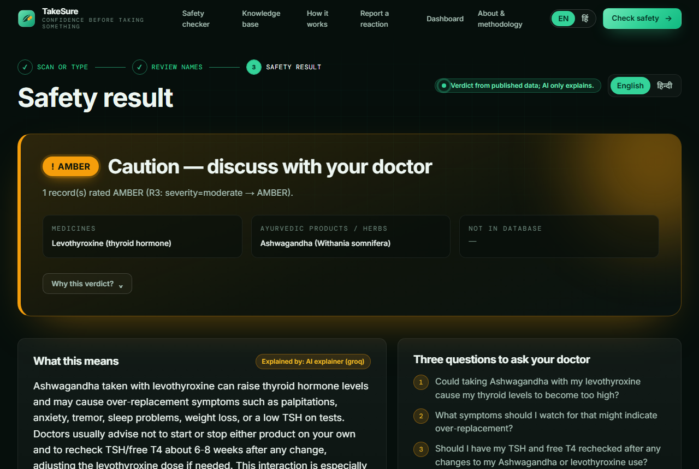
/results — step 3 of 3. AMBER: Caution — discuss with your doctor
What the judge seesA big AMBER card: "Caution — discuss with your doctor", the rule that fired ("1 record rated AMBER, R3: severity = moderate → AMBER"), the medicines and herbs compared, "Not in database: —", a "Why this verdict?" expander. Below: What this means with the badge "Explained by: AI explainer (groq)", and Three questions to ask your doctor. Further down: the matched interaction (INT-ASHWA-THYROID, severity moderate, evidence grade B, pharmacodynamic, matched by class: thyroid hormone), why it happens, what may happen, what doctors usually do, "extra care if: hyperthyroid history, pregnancy", and Evidence & sources (3) with DOI/PMID links. Then "Every pair we checked", the disclaimer, Download PDF for doctor and Report a suspected reaction.
What to say"AMBER. Look at the line under it — it shows the exact rule: severity moderate, so AMBER. This colour did not come from AI. It came from one row in our knowledge base, and that row has three published sources — here they are. Only now does AI step in: it rewrites that row in simple words and gives three questions for the doctor. It cannot change the colour. If I switch the AI off, the colour stays the same and the knowledge-base text appears instead." Open "Why this verdict?" and scroll to the sources.
Kisme kya use kiyaRule engine (plain Python, no ML) in interaction_service.py: R1 no row → GREEN; R2 minor → GREEN (with timing gap); R3 moderate or grade C with mechanism → AMBER; R4 major → RED; R5 moderate + high-risk drug class → RED. Worst pair wins; unknown is GREY, never GREEN. Rows come from SQLite/PostgreSQL via SQLAlchemy (interactions, interaction_sources). The explanation is POST /api/explain: Groq API, model openai/gpt-oss-120b, temperature 0, receives only the matched rows, must return JSON {summary_en, summary_hi, timing_gap, doctor_questions[3]} validated by Pydantic; a forbidden-phrase filter rejects "stop taking / increase the dose / 50 mg"; on any failure the deterministic knowledge-base text is shown (origin "kb_fallback"). The query is logged to queries_log (ids + verdict only).
6. The same result in Hindi
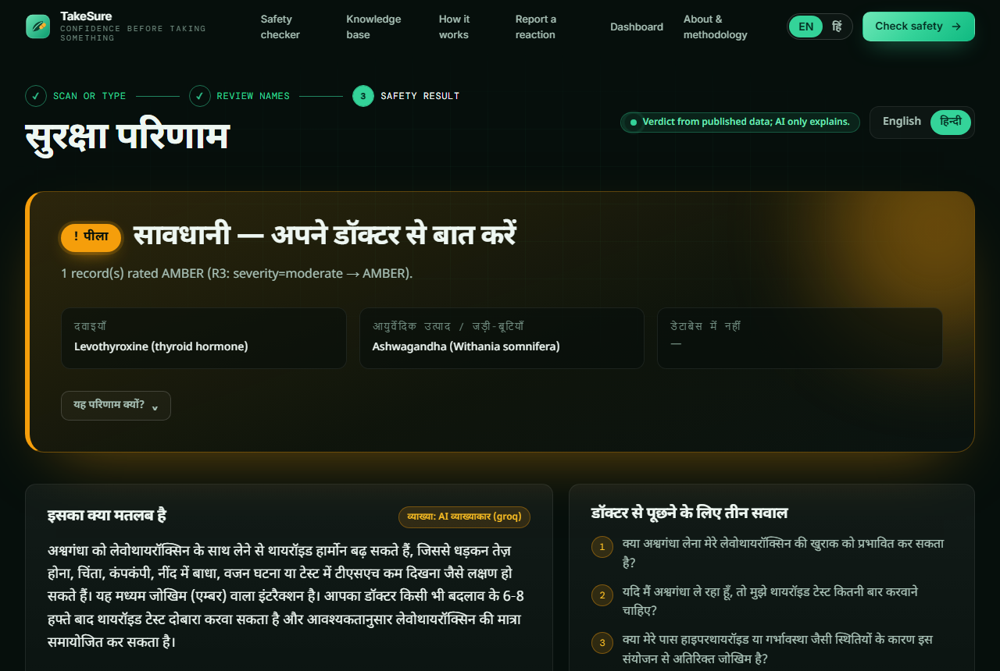
/results with the हिन्दी toggle — सुरक्षा परिणाम · सावधानी — अपने डॉक्टर से बात करें
What the judge seesThe whole result in Hindi: heading, the AMBER badge as "पीला", the explanation "इसका क्या मतलब है" and the three questions "डॉक्टर से पूछने के लिए तीन सवाल". The verdict line and rule stay identical.
What to say"One tap and the same result is in Hindi — for the patient's mother, not for the doctor. Note the verdict did not change; only the language did."
Kisme kya use kiyaUI strings from our i18n dictionary (lib/i18n.tsx, Noto Sans Devanagari via next/font); the Hindi explanation is the summary_hi field returned by the same Groq call (or the Hindi fallback text from the knowledge base). The PDF uses the Nirmala UI font so Devanagari prints correctly.
7. A RED example — Guggul + Warfarin
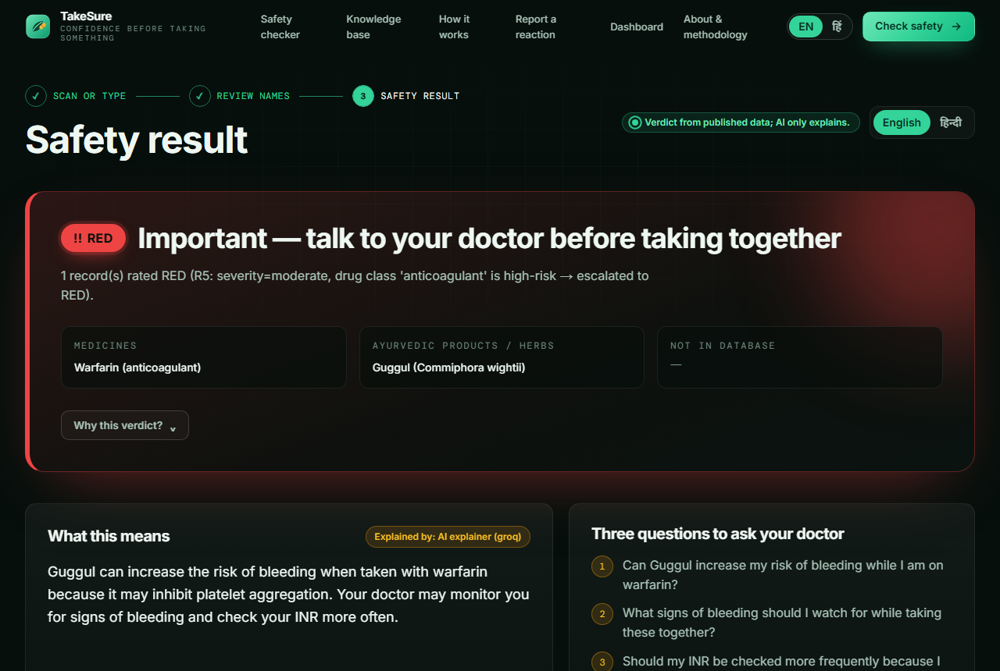
/results?demo=guggul-warfarin — RED: high risk, the pair a cardiologist would want to know about
What the judge seesA RED card for a blood thinner plus guggul (bleeding risk), with the escalation rule shown (R5: moderate severity + high-risk drug class anticoagulant → RED), grade and sources.
What to say"A second example: warfarin, a blood thinner, with guggul for cholesterol. RED — because anticoagulants are a high-risk class, our rule R5 escalates. And if I type something we do not know — say Dolo 650 with Tulsi — the answer is 'not in database'. We never guess green." (Type it live if time allows.)
Kisme kya use kiyaSame evaluate path; HIGH_RISK_CLASSES in the rule engine (anticoagulants, immunosuppressants, antiepileptics, cardiac glycosides…) drives R5. The demo deep link /results?demo=<id> loads a scenario from GET /api/demo/scenarios/{id} so a result can be opened in one click during a presentation.
8. Knowledge base — where every verdict comes from
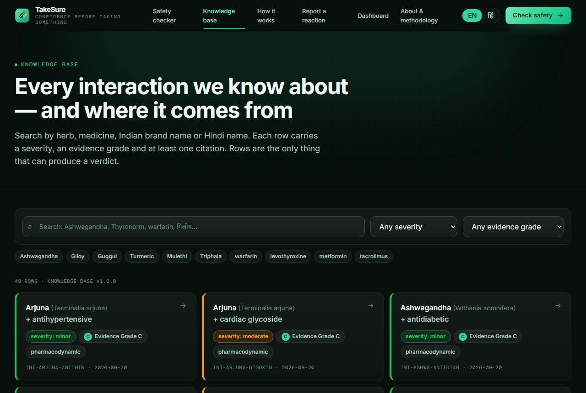
/knowledge-base — 49 rows, searchable by herb, medicine, Indian brand or Hindi name
What the judge sees"Every interaction we know about — and where it comes from." A search box (try "गिलोय" or "Thyronorm"), severity and grade filters, quick chips, and 49 cards each showing herb + drug class, severity, evidence grade, interaction type, code and date. Clicking a card opens the full row with mechanism, management, timing gap and sources.
What to say"This is the heart of the product: the knowledge base. 49 rows today, 78 sources, every row graded A, B or C and citing a DOI or PubMed id. It is open — a doctor can audit any verdict back to its paper. Search works in Hindi and on Indian brand names because of the bridge dictionary. This table is what we spent most of our time on, and this is what we will grow with an Ayurveda college."
Kisme kya use kiyaGET /api/interactions and GET /api/interactions/{code}; data seeded from database/seed/*.json into eight SQLAlchemy tables (herbs, herb_synonyms, drugs, drug_brands, products, product_herbs, interactions, interaction_sources). Evidence grades follow the Stockley's model: A trials/reviews, B case reports/small trials, C mechanism/animal/lab. KB_VERSION 1.0.0 is stamped on every result and PDF.
9. Report a suspected reaction — the Ministry link
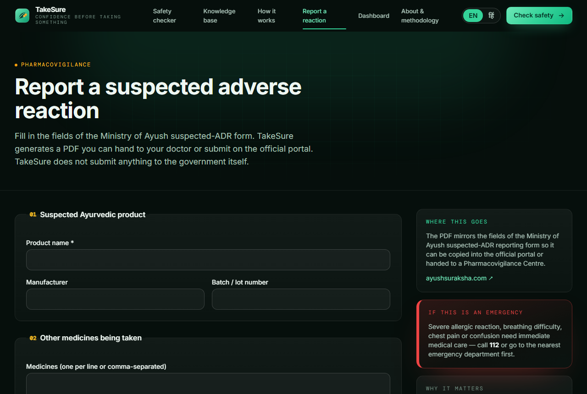
/adr — the fields of the Ministry of Ayush suspected-ADR form
What the judge seesA form in the official order: suspected Ayurvedic product (name, manufacturer, batch), other medicines, the reaction, onset, outcome, seriousness, age group, sex, reporter type, state, consent. Side panels: where this goes (Ayush Suraksha portal), an emergency notice (call 112), why it matters. On submit: a reference number and a PDF to hand to a doctor or upload to the portal.
What to say"If something did go wrong, this is the one-tap report. The fields mirror the Ministry of Ayush suspected-ADR form, so the PDF can be copied into the Ayush Suraksha portal or given to a pharmacovigilance centre. We do not submit to the government ourselves — we remove the friction that keeps the national count at about 1,473 reports."
Kisme kya use kiyaPOST /api/adr validated by a Pydantic model aligned with ICSR fields (outcome and seriousness as fixed enums), stored in adr_reports with a consent flag; POST /api/adr/pdf builds the PDF with ReportLab. The frontend form is our React ADRForm.
10. Pharmacovigilance dashboard — the Ministry view
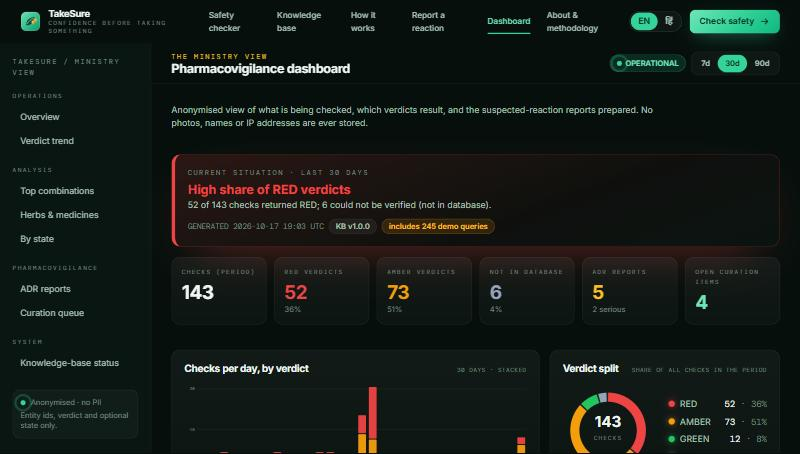
/dashboard — anonymised: 143 checks in 30 days, 52 RED, 73 AMBER, 6 not in database, 5 ADR reports (2 serious), 4 open curation items
What the judge seesOperational badge, 7/30/90-day switch, a "current situation" alert (high share of RED verdicts), KPI tiles, checks per day stacked by verdict, verdict split donut, then top combinations, herbs and medicines, by state, ADR reports, curation queue and knowledge-base status. A note: anonymised, no personal data, includes demo queries.
What to say"Every check leaves an anonymous record — only ids and the verdict, never a name or a photo. Aggregated, that becomes something the Ministry of Ayush does not have today: what India is actually mixing, which pairs come up most, which states, and how many reactions were reported. The numbers you see include seeded demo queries so the charts are not empty."
Kisme kya use kiyaGET /api/analytics/summary?days=30 — SQL aggregation over queries_log, adr_reports and feedback (analytics_service.py). Charts are hand-written SVG in React (no chart library), counters animate with Framer Motion. Demo activity was seeded with scripts/seed_demo_activity.py.
11. How it works — the method page
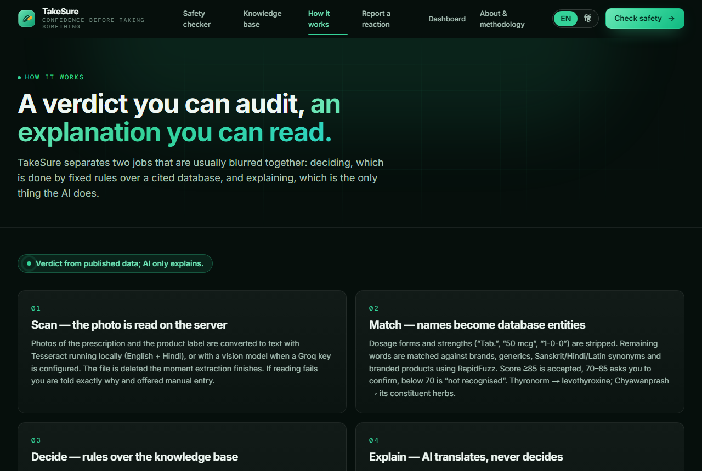
/how-it-works — the pipeline and the rules, written for a doctor or a reviewer
What the judge seesThe pipeline Scan → Match → Decide → Explain → Report, the five rules, the evidence grades, the AI guardrails and the privacy rules, in plain language.
What to say"For a doctor or a regulator who asks 'how do you decide?', this page is the answer: the five rules, the grades, and what AI is and is not allowed to do."
Kisme kya use kiyaStatic Next.js page; the same content as the About & methodology page and the README. Useful when a judge wants the method without the code.
12. API documentation — for technical judges
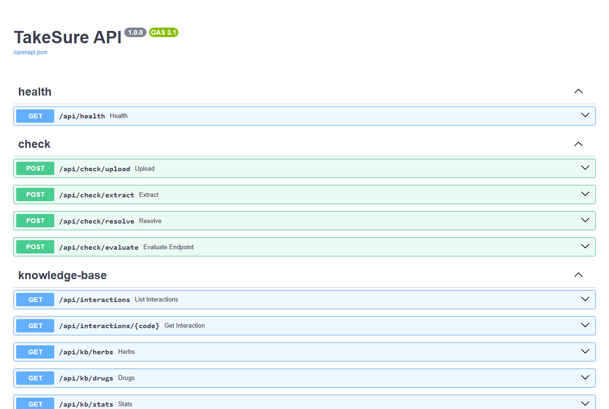
http://localhost:8000/docs — 18 routes, generated automatically; every one can be tried live
What the judge seesSwagger UI: health, check (upload, extract, resolve, evaluate), knowledge-base (interactions, herbs, drugs, stats), explain, adr, feedback, report, demo, analytics. Each route shows its request and response schema and a "Try it out" button.
What to say"The backend is a documented REST API — this is also what a pharmacy chain or a telemedicine app would integrate. Health check says database ok, OCR available, and which AI model is configured." (Open /api/health if asked.)
Kisme kya use kiyaFastAPI generates OpenAPI 3.1 from the Pydantic models; Uvicorn serves it; structured JSON logging with request ids; CORS limited to the frontend origin; rate limit 60/min; configuration in backend/.env (the Groq key never leaves the server).
13. One-table summary: which technology does what
| Screen / step | Technology | Trained by us? |
|---|
| Website, pages, Hindi toggle | Next.js 16, React 19, TypeScript, Tailwind CSS 4, Framer Motion, own i18n dictionary | No ML involved |
| Photo reading | Pillow pre-processing + Tesseract 5.4 (eng + hin), local | No — pre-trained open-source OCR; we only pre-process and configure |
| Name matching | RapidFuzz string similarity over our bridge dictionary | No — not ML; the dictionary is ours |
| Verdict | Rule engine R1–R5 over the SQL knowledge base (SQLAlchemy, SQLite / PostgreSQL) | No ML — rules and data written by us |
| Explanation + 3 questions | Groq API, open-weight gpt-oss-120b, zero-shot, JSON schema, forbidden-phrase filter, KB fallback | No — hosted pre-trained LLM, no fine-tuning; guardrails are ours |
| Doctor PDF, ADR PDF | ReportLab, Nirmala UI font for Hindi | — |
| ADR report, feedback | FastAPI + Pydantic models aligned with Ministry ICSR fields | — |
| Dashboard | SQL aggregation + hand-written SVG charts | — |
| Quality | 51 pytest tests, offline; browser end-to-end check | — |
If asked "so where is your own AI?": "Our intelligence is in the data and the rules, not in a trained model. We use pre-trained AI where it is safe — reading a photo and rewording a sentence — and we keep it out of the decision. That is the design, and it is why a doctor can audit every answer."